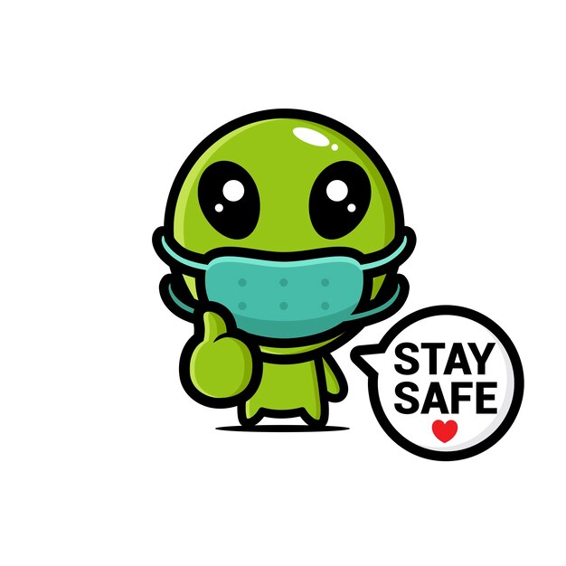
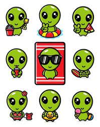
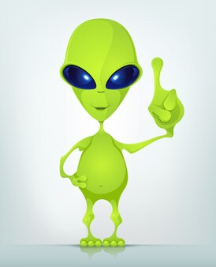
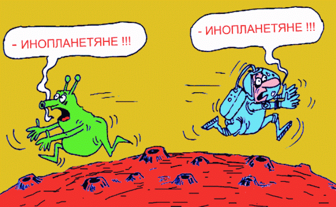

:hover срабатывает, когда пользователь наводит на элемент мышью, но не обязательно активирует его
don't click on me!
:hover может все что угодно, сделать видимым невидимое :)

:hover передает послание с другой галактики :)
:active соответствует элементу в момент, когда он активируется пользователем
click on me!
:visited применяется к ссылкам, уже посещённым пользователем
а эти ссылки мы посещаем довольно часто при сдаче ДЗ
:focus применяется, когда элемент получает фокус, либо при выборе его пользователем при помощи
клавиатуры, либо активацией его мышью (например, при вводе формы).
сейчас последняя возможность вернуться вначало!
дальше пойдут дети 👶🏻- и пути назад не будет :)
↑
К этой группе относятся псевдоклассы, которые определяют положение элемента в дереве документа и применяют к нему
стиль
в зависимости от его статуса.
Наиболее используемые псевдоклассы:
:first-child - обращение к первому элементу в блоке;
:last-child - обращение к последнему элементу в блоке;
:nth-child() - обращение к конкретным элементам в блоке;
:nth-of-type() - обращение к конкретным элементам в блоке по типу.
Все самое интересное об возможностях этих чудных детках смотри по ссылке ↓:

Псевдоэлементы
Псевдоэлементы это ключевое слово, добавляемое к селектору, которое позволяет задать стиль элементов
не определённых в
дереве элементов документа, а также генерировать содержимое, которого нет в исходном коде текста.
::first-line - Задаёт стиль первой строки форматированного текста.
Инопланетяне следят за нашим прогрессом и недоумевают: Ракета –> Процессор на 8 ядер –>
палка для селфи.
::first-letter - Определяет стиль первого символа в тексте элемента, к которому добавляется.
Люди, которые хотят выиграть Мерседес за лайк, вы понимаете, что это из-за вас инопланетяне не хотят с нами
разговаривать?
::before - Применяется для отображения контента до содержимого элемента, к которому он добавляется.
Про псевдоэлементы ВАЖНО помнить:

::after - Применяется для отображения контента после содержимого элемента, к которому он добавляется.
Этими псевдоэлементами можно сотворить многое!
Встреча ::before и ::after

Обучайся! Развивайся! И помни 🤟 Живи, а работай в свободное время! © FLS